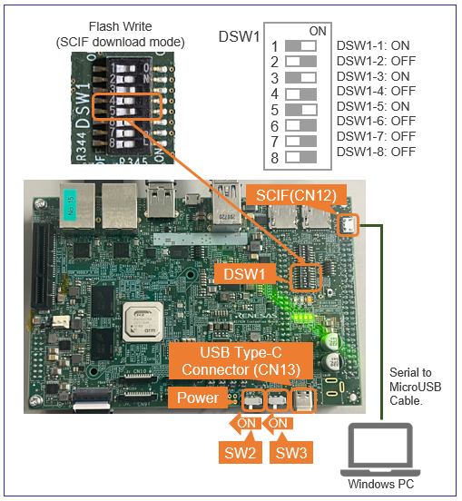

Renesas
RZ/V AI
The best solution for
starting your AI applications.
Provided by Renesas Electronics Corporation


To keep you updated,
Watch our GitHub repository
Watch
This project is maintained by renesas-rz
Hosted on GitHub Pages — Theme by orderedlist
Developer's Guide
This page explains the additional information of How to Build RZ/V2H AI SDK for Linux developers.
Terminology
Contents
| ID | Title | Device | Target |
|---|---|---|---|
| D1 | Change the Graphics Library to the Unrestricted Version | RZ/V2H | AI SDK Source Code v5.00 |
| D2 | Change the size of the microSD card image in WIC format | RZ/V2H | AI SDK Source Code v5.00 |
| D3 | How to boot from xSPI | RZ/V2H | AI SDK Source Code v5.00 |
D1. For RZ/V2H: Change the Graphics Library to the Unrestricted Version
This section explains how to prepare Graphics Library for unrestricted version, instead of evaluation version.
Note
Following instruction assumes that you have completed Step 3-6 in How to build RZ/V2H AI SDK Source Code.
- Download zip files from the link below.
Note It may take much time to obtain Graphics Library for unrestricted version due to necessary examinations on your business purpose.
Download Link - After you downloaded the zip files, please move the zip files to "
${WORK}/src_setup" on your Linux PC.
- Check that zip files are moved to appropriate location.
cd ${WORK}/src_setup ls -1- If the above command prints followings, the package is extracted correctly.
README.txt RTK0EF0*ZJ-v*_rzv_*.zip rzv2h_ai-sdk_yocto_recipe_v*.tar.gz yocto
- If the above command prints followings, the package is extracted correctly.
- Run the below command to delete evaluation version.
rm -rf ${YOCTO_WORK}/meta-rz-features/meta-rz-graphics - Run the below command to extract the unristricted version.
unzip RTK0EF0045Z14001ZJ*.zip tar zxvf RTK0EF0045Z14001ZJ*/meta-rz-features_graphics_*.tar.gz -C ${YOCTO_WORK}
D2. For RZ/V2H: Change the size of the microSD card image in WIC format
This section explains how to change the microSD card image size by changing the build settings of the WIC file.
Note
Following instruction assumes that you have completed Step 3-10 in How to build RZ/V2H AI SDK Source Code.
- Open
${YOCTO_WORK}/build/conf/local.conffile in a text editor. - Find the following text in the file and edit the highlighted value to define the disk space of the image in Kbytes.
The table below shows examples of setting values written in... # Support WIC images with default wks from WKS_DEFAULT_FILE # Reupdate WKS_DEFAULT_FILE if want to support another wks file. WKS_SUPPORT ?= "1" WKS_DEFAULT_FILE_rzv2h-dev = "rz-image-bootpart-mmc.wks" WKS_DEFAULT_FILE_rzv2h-evk-alpha = "rz-image-bootpart-esd_rzv2h.wks" WKS_DEFAULT_FILE_rzv2h-evk-ver1 = "rz-image-bootpart-esd_rzv2h.wks" # Defines additional free disk space created in the image in Kbytes. IMAGE_ROOTFS_EXTRA_SPACE = "8388608" ...local.conffile.
Note If you have customized Linux, the disk image size may differ from the table.SD card image size
(Gbytes)Setting values in the "local.conf" file
(Kbytes)4 1048576 8 4194304 16 8388608 (default)
D3. For RZ/V2H: How to boot from xSPI
This section explains how to boot from xSPI on RZ/V2H EVK.
Note
Following instruction assumes that you have completed Step 3 in How to build RZ/V2H AI SDK Source Code and Step 7-1:Setup RZ/V2H EVK in RZ/V2H EVK Getting Started.
Note
To perform this procedure, please prepare the following equipment in addition to the 1.Necessary Equipments.
- Windows PC
- MicroUSB to Serial Cable for serial communication (Included in RZ/V2H EVK)
Follow the instruction below to setup the board.
-
1. Install Terminal Emulator
-
Install following software on Windows PC to be used as serial communication console.
-
Terminal emulator
- Operating Environment: Tera Term
-
Terminal emulator
-
Install following software on Windows PC to be used as serial communication console.
-
2. Install the serial port driver
Note If you have already installed the serial port driver, skip this step and proceed to next procedure.The serial communication between Windows PC and RZ/V2H EVK requires following driver.
https://ftdichip.com/drivers/vcp-drivers/
- Download the software "Virtual COM port (VCP) driver" from the windows version "setup executable" on the download page and extract it.
-
Run the
*.exefile extracted to install the serial port driver.
-
3. Write bootloaders on the board
- Copy following files in
${WORK}/build/tmp/deploy/images/rzv2h-evk-ver1to your Windows PC.Flash_Writer_SCIF_RZV2H_DEV_INTERNAL_MEMORY.motbl2_bp_spi-rzv2h-evk-ver1.srecfip-rzv2h-evk-ver1.srec
- Connect Windows PC and Board via Serial to MicroUSB Cable.
- Change DSW1 setting to Boot mode 3 (SCIF download). See the figure below.
 - Connect the power cable to CN13 on the Board.
- Turn the SW3 to ON.
- On Windows PC, open the terminal emulator. Here, we use Tera Term as an example.
- Select "File" > "New Connection" and select "Serial" port as shown below.

- Open the configuration window from the "Setup">"Terminal" and change the setting as follows.
Item Value New-line Receive: Auto Transmit: CR - Open the configuration window from the "Setup">"Serial port" and change the setting as follows.
Item Value Baud rate 115200 Data 8bit Parity none Stop 1bit Flow control none Transmit delay 0msec/char - Turn the SW2 to ON to power on the Board and following message will be displayed on the terminal.
SCI Download mode (Normal SCI boot) -- Load Program to SRAM --------------- -
Open "File" > "Send file..." and send the Flash Writer file (
*.mot) as a text.
If following message is displayed, the file transfer succeeded.Flash writer for RZ/V2x Series Vx.xx xxx.xx,20xx Product Code : RZ/V2x > - Enter "
XLS2" on the terminal to get following messages.> XLS2 ===== Qspi writing of RZ/V2x Board Command ============= Load Program to Spiflash Writes to any of SPI address. Program size & Qspi Save Address ===== Please Input Program Top Address ============ Please Input : H' - Enter "
8101e00". The log continues.Please Input : H'8101e00 ===== Please Input Qspi Save Address === Please Input : H' - Enter "
00000". The log continues.Please Input : H'00000 please send ! ('.' & CR stop load) - After the "please send!" message, open "File" > "Send file..." and send the
bl2_bp_spi-rzv2h-evk-ver1.srecfile as a text from the terminal software. - In case a message to prompt to clear data like below, please enter "
y".SPI Data Clear(H'FF) Check : H'00000000-0000FFFF,Clear OK?(y/n) - Following log will be displayed.
Write to SPI Flash memory. ======= Qspi Save Information ================= SpiFlashMemory Stat Address : H'00000000 SpiFlashMemory End Address : H'00036D17 =========================================================== - Enter "
XLS2" on the terminal to get following messages.> XLS2 ===== Qspi writing of RZ/V2x Board Command ============= Load Program to Spiflash Writes to any of SPI address. Program size & Qspi Save Address ===== Please Input Program Top Address ============ Please Input : H' - Enter "
00000". The log continues.Please Input : H'00000 ===== Please Input Qspi Save Address === Please Input : H' - Enter "
60000". The log continues.Please Input : H'60000 please send ! ('.' & CR stop load) - After the "please send!" message, open "File" > "Send file..." and send the
fip-rzv2h-evk-ver1.srecfile as a text from the terminal software. - In case a message to prompt to clear data like below, please enter "
y".SPI Data Clear(H'FF) Check : H'00000000-0000FFFF,Clear OK?(y/n) - Following log will be displayed.
Write to SPI Flash memory. ======= Qspi Save Information ================= SpiFlashMemory Stat Address : H'00060000 SpiFlashMemory End Address : H'0011C2EE =========================================================== - Power-off the board to change DSW1 for booting the board.
- Copy following files in
-
4. Setup U-boot setting
Follow the procedure below to set the booting configuration of the board.
- Insert the microSD card to the Board.
Note Use the microSD card slot SD1 as shown in the figure.
- Change DSW1 setting to Boot mode 2 (xSPI boot) as shown in the right figure.
- Connect the Board and Windows PC by the USB Serial to Micro USB cable.
- Connect the power cable to the Board.
- Turn the SW3 to ON.
- Open the terminal emulator, i.e., Tera Term, and connect with COMS port.
Note When using Tera Term, change the configuration as explained in Write bootloaders on the board.
- Turn the SW2 to ON to power on the Board.
- On the terminal emulator, keep pressing ENTER key.
- U-boot console will be activated.
- Run the following commands to set the booting configuration.
env default -a saveenv boot - After the boot-up, the login message will be shown on the console.
rzv2h-evk1 login: - Log-in to the system using the information below.
- user:
root - password: none
- user:
- Shutdown the board to finish the U-boot setting.
Shutdown Procedures
- Insert the microSD card to the Board.
This is the end of How to boot from xSPI on RZ/V2H EVK.